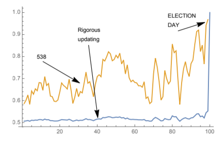

With US elections around the corner, news outlets are constantly deploying new models to try to predict who will win the next presidential elections. Ever since Trump’s ‘surprising’ win in ’16, these (pre-election) polls based models have come under scrutiny. Indeed, there is a huge amount of uncertainty that these models do not seem to capture well enough.
Taleb’s and Dhruv Madeka’s point is the following: whilst forecasting an uncertain election, one cannot invoke probabilistic thinking unless one imposes severe constraints on how the forecast will move up to election day. If one’s forecast is having large swings across time, then, one’s forecast is not coherent with the basic tenet of subjective probability as espoused by De Finetti.
In this blogpost, I’ll explain what is the basic tenet of subjective probability according to De Finetti and explain how Taleb expands on this definition to verify what are the consequences that every probabilistic forecast mus satisfy to be considered coherent forecasts. At the end, we will arrive at the surprising result that uncertain and highly volatile elections must result in very stable 50/50 forecasts.
De Finetti’s argument
De Finetti (an italian writing in French) argued that any subjective probability statement defines a bet that one would be willing to accept. That is, subjective probability statements must be backed up by skin in the game. In his own words in La prévision: ses lois logiques, ses sources subjectives (PDF)
Il s’agit simplement de préciser mathématiquement l’idée banale et évidente que le degré de probabilité attribué par un individu à un événement donné est révélé par les conditions dans lesquelles il serait disposé de parier sur cet événement
Supposons qu’un individu soit obligé d’évaluer le prix p pour lequel il serait disposé d’échanger la possession d’une somme quelconque S (positive ou négative) subordonnée à l’arrivée d’un événement donné, E, avec la possession de la somme p S ; nous dirons par définition que ce nombre p est la mesure du degré de probabilité attribué par l’individu considéré à l’événement E, ou, plus simplement, que p est la probabilité de E.
Indeed, from this simple statement, all the axioms of probability follow:
de telle façon que toute la théorie des proba- bilités puisse se déduire immédiatement d’une condition très naturelle ayant une signification évidente
To be a coherent statement, this bet must preclude the possibility of arbitrage. That is, an opposite bettor cannot create a risk-free series of bets such that he always makes a profit.
Ceci posé, lorsqu’un individu a évalué les probabilités de certains événements, deux cas peuvent se présenter : ou bien il est possible de parier avec lui en s’assurant de gagner à coup sûr, ou bien cette possibilité n’existe pas. Dans le premier cas on doit dire évidemment que l’évaluation de la probabilité donnée par cet individu contient une incohérence, une contradiction intrinsèque; dans l’autre cas, nous dirons que l’individu est cohérent.
Therefore, the only coherent probabilistic statements are the ones that imply a bet that precludes arbitrage.
C’est précisément cette condition de cohérence qui constitue le seul principe d’où l’on puisse déduire tout le calcul des probabilités : ce calcul apparaît alors comme l’ensemble des règles auxquelles l’évaluation subjective des probabilités de divers événements par un même individu doive être assujettie si l’on ne veut pas qu’il y ait entre elles une contradiction fondamentale.
Taleb expands De Finetti’s argument
Whilst De Finetti worked with one forecast, Taleb expands this coherence argument into a series of supposedly probabilistic statements that create a series of forecast leading up to the election. Intuitively, highly uncertain elections are uncertain because in whatever time is left, a lot of events can happen that can decide an election.
Given a forecast, how should this forecast evolve through time? Should it be swayed by every piece of evidence into forecasting a clear winner, even months ahead of the election? Or should it remain skeptical up to last minute? Using De Finetti’s skin in the game argument, Taleb and Madeka argue that the problem is equivalent to that of pricing a binary option on the election date.
Imposing arbitrage boundaries lead us to the conclusion that the more volatile the election, our forecast must be around 50/50 and very stable (low volatility), despite what the current evidence may incline one to believe.

Otherwise, the future revised estimates with large swings open up the possibility of inter-temporal arbitrage by buying and selling from the “assessor” that is forecasting. From the comic of the Black Swan Man:

Therefore, a series of forecasts are only coherent if they preclude the possibility of arbitrage. And in the case of highly uncertain elections, the only way to make this happen is to forecast a very stable 50/50 that is only updated at the very last minute.